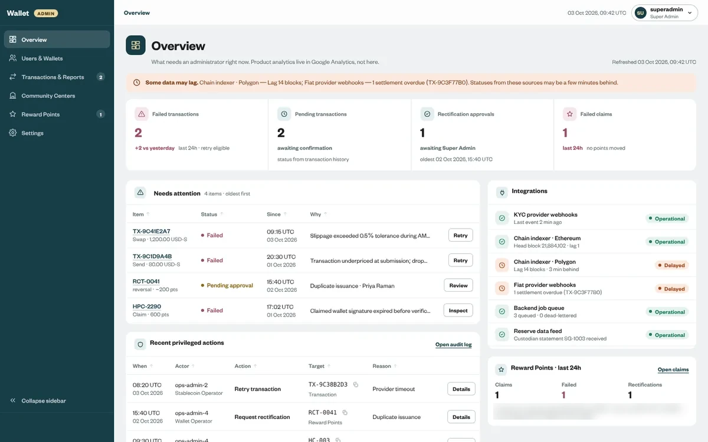
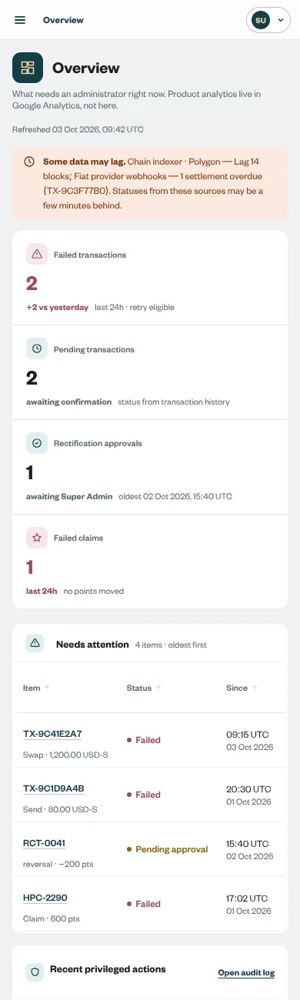
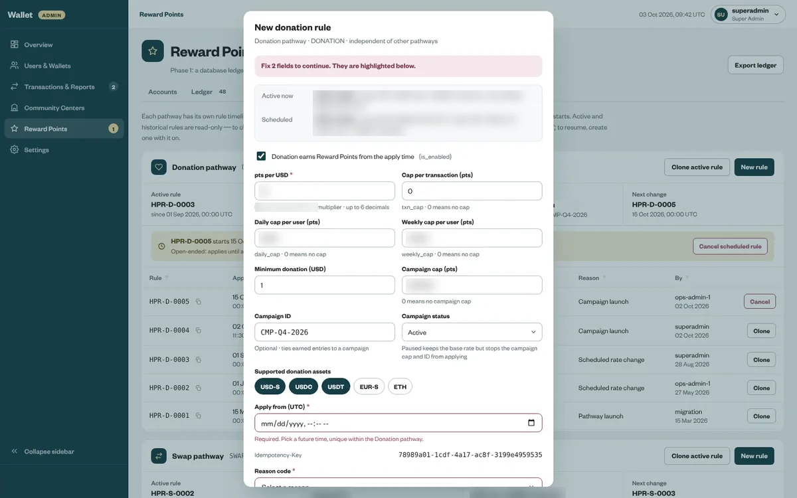
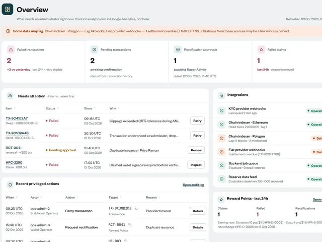
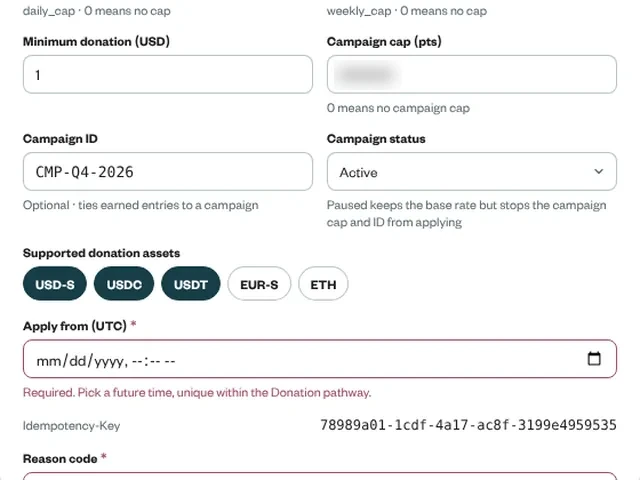
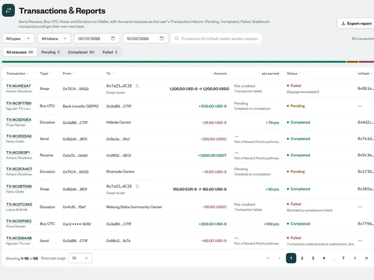
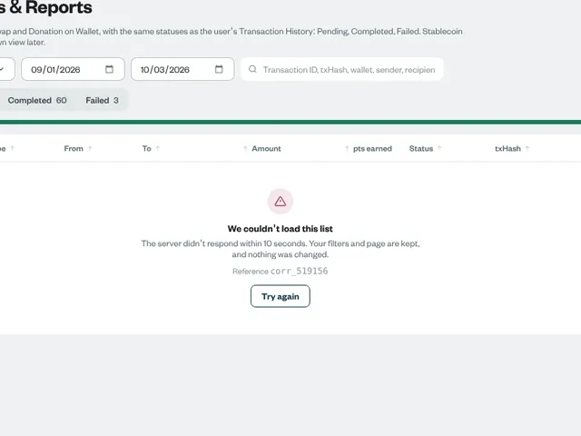
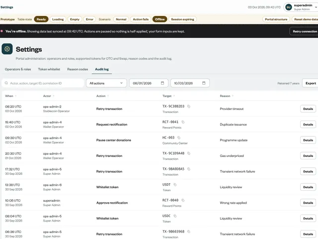
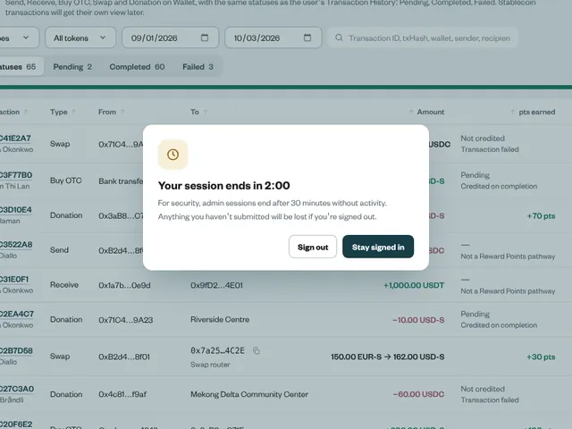

Unera · 2026 – now · 7 min read
An operations console where every screen ships with its bad days, and the team got to cut what AI added.
Why this case is here: Leading a small team: standards, reviews, and hand-off engineers can build from.
In build, spec v16.
Six scenes follow, then the full written case. Every number carries a stamp that says how I know it.
- Lead Product Designer (contract), leading a part-time junior designer
- Product owner, QA and spec owner, 2 back-end and 2 front-end engineers, 1 junior designer
- In build, spec v16
- Features cut before anyone built them4Record
- Gaps between design and API, each with a proposal9Record
- Rate change: clone vs blank rule~33 s vs ~73 sModelled
The problem
A tool that can fix things can also hide them.
An operator who can edit a balance can also make a mistake vanish. The client set hard limits: no refunds from the console, no balance edits, every adjustment append-only.
The usual console
- A wall of charts
- A confirm dialog
- An on/off switch for rules
This one
- A queue of what needs an operator now
- A reason saved with every privileged action
- Rule versions you can create, clone or cancel, never rewrite
The design
Operators start the day asking “what needs me”, so the overview is a queue.
Failed or stuck transactions, pending reviews and centres with problems, each with one next action. Analytics live elsewhere.
The standard
Every module ships with its bad days.
No module reaches engineering without its happy, error and edge states, plus offline and session expiry. Status names match the user’s own history, so support and customers use the same words.

The console, as a place
Thousands of transactions. The few that need a person rise.
The overview is a queue: failed, stuck and waiting-for-approval items, each with one next action.
Every fix is written down with its reason.
A retry, a pause or a rule change can’t be saved without a reason code. Each one adds an entry to the log.
Nothing is edited. A change is a new entry.
Cancelling a scheduled rule adds an entry on top. The old one stays, so anyone can see what applied last Tuesday. The cubes are an illustration, not data.
- Thousands of transactions. The few that need a person rise. The overview is a queue: failed, stuck and waiting-for-approval items, each with one next action.
- Every fix is written down with its reason. A retry, a pause or a rule change can’t be saved without a reason code. Each one adds an entry to the log.
- Nothing is edited. A change is a new entry. Cancelling a scheduled rule adds an entry on top. The old one stays, so anyone can see what applied last Tuesday. The cubes are an illustration, not data.
The review
I said where AI had drafted the design. The team cut four features before anyone built them.
Tag editing, statuses that didn’t exist in the back end, an amount filter and global search. Saying it plainly made it easy for engineers to push back.
- 28
- items in the 13 October review
- RecordEach with an owner and an outcome
- 4
- features removed before build
- RecordAfter AI disclosure
- 7 · 10 · ~65
- modules, components, tokens
- RecordSpec v16
Leading the work
The standard came before the screens.
- The states rule and the reason-on-every-action rule were in the design readme before the first module was built.
- Ran an open review: the product lead chaired, I presented, the team edited the design in the room.
- Split the work by lane: a part-time junior designer owns error and edge states against rules I wrote, not against my preferences.
- Mapped 15 spec requirements and 11 review items to screens, and raised 9 gaps with the back-end, each with a proposal.
Read the full case
In one line: Operators needed one console to fix stuck transactions, manage community centres and run the points rules, without ever being able to quietly change someone's balance. I designed it with the team in the room, told them openly which parts AI had drafted, and let them cut what they didn't need.
| Role | Lead Product Designer (contract). I set the design standards and lead a part-time junior designer who works on error and edge states. |
| Team | Product lead, product owner, QA and spec owner, 2 back-end and 2 front-end engineers |
| Platform | Desktop-first web console that still works on a phone |
| Status | Designed to spec v16. First release scoped to the Huma operators. In build. |
Thirty-second version
- Problem. Support and operations staff needed to find failed transactions, manage centres and run reward rules. In a money product, the same tool that fixes a problem can also hide one.
- What I did. Made the overview a work queue, not a dashboard. Put a reason field on every privileged action. Made reward rules append-only, so history can't be rewritten. Set one rule for every module: happy, error and edge states, plus offline and session expiry, designed before hand-off.
- How it went. In the review on 13 October, the team went through 28 points. I'd told them up front that AI had drafted parts of the design and asked them to cut anything they didn't need. They removed four features, and we narrowed the first release to what the end-of-October launch needed. Before launch I modelled the two main operator tasks and wrote a five-person test to replace the model.
How the work ran
| Step | What happened |
|---|---|
| Discover | 25 September 2026: direction from the QA and spec owner, "structure first, keep it simple". Read the spec (v13 on 8 October, v16 on 12 October) and the client's hard limits: no refunds, no balance edits, adjustments append-only. |
| Reframe | From "an admin dashboard" to "a queue of what needs an operator now, with a reason recorded for everything they do". |
| Quality bar | States rule written into the design readme: no module reaches engineering without happy, error, edge, offline and session-expiry states. Status names identical to the user's own history. |
| Design | Audit 4 October; builds 11, 13 and 16 October. Seven modules, 10 components, about 65 tokens, 11 guideline cards. |
| Validate | 13 October review with the product lead, product owner, QA, back-end and front-end: 28 items, four features removed, release scope narrowed. |
| Ship or measure | First release scoped to Huma operators, targeted for end of October 2026. Not launched yet. Configuration tab proposed next. |

A tool that can fix things can also hide them.
In a consumer money product, the admin console is where trust is won or lost out of sight. An operator who can edit a balance can also make a mistake vanish. Regulators, auditors and the client's own board all care about this, even if users never see the screen.
The client set hard limits: no refunds from the console, no balance edits, and any adjustment recorded as a new entry. My job was to make those limits feel like the natural way to work, not like obstacles.
Operators start the day asking "what needs me", so the overview is a queue.
Admin homepages tend to become chart walls. Operators don't start their day asking "how are we doing?". They ask "what needs me?". The overview lists exactly that: failed or stuck transactions, pending reviews and centres with problems, each with one next action.
Every privileged action records a reason, because a confirm dialog proves nothing later.
Pausing a centre, changing a rule or retrying a payment asks for a reason code and a note. The reason is saved with the action. Six months later, an auditor can see who did what and why, without asking anyone.
Reward rules are append-only, because a switch rewrites history.
Reward rules started with an on/off switch. The trouble with a switch is that you can't tell what rule applied last Tuesday. I replaced it with versions you can create, clone or cancel before they start. Validation catches missing fields, start dates in the past and duplicates, and warns about overlaps.

Every module ships with its bad days.
My rule for this console, written into its design readme: no module goes to engineering without its happy, error and edge states, plus offline and session expiry. Tables page after ten rows and use the same status names the user sees in their own history, so support and customers describe a transaction the same way.
I said where AI was used, and the team cut four features before anyone built them.
I design in code with AI help, and it's fast. It's also generous: it adds things nobody asked for. Before the 13 October review, I told the team which parts AI had drafted and asked them to call out anything redundant.
They did. We removed tag editing, statuses that didn't exist in the back end, an amount filter and global search. Each was a feature someone would have had to build, test and maintain for no user need. Saying it plainly made it easy for engineers to push back. Hiding it would have made every extra look like my judgement.
| From the 13 Oct review | What changed |
|---|---|
| Features nobody asked for | Tag editing, invented statuses, amount filter, global search removed |
| Swap amounts | Show both sides: "1,200 hUSD → 1,200 USDC" |
| Token list | Split into OTC and Swap |
| Community centres | Pause added |
| Release scope | Needs-action, Reserve and stablecoin roles hidden for the first launch |
I own the flows and the rules. The junior designer owns the bad days inside them.
As the three products grew, the edge cases outgrew one person. A part-time junior designer joined to work on error and edge states. I split the work into two lanes so it could run in parallel without two designers inventing two styles.
My lane The modules, the rules, the system

Overview as a queue of what needs an operator
Rule form: a future start date and a reason, or no save
Tables: the user's own status names, 10 rows a page
I hand over the module, the spec's list of failure cases and the written states rule. Every state comes back to me for review before engineering sees it.
Junior designer's lane The bad days, inside those rules

Failed to load: "nothing was changed"
Offline: actions paused, nothing half-applied
Session ending: two minutes' warning
The states rule is in the console's design readme, dated 4 October, before the first module was built:
- Every error says what happened in plain words, that nothing was changed, what to do next, and gives a reference.
- Dialogs stay open on failure, with what the operator typed still in them.
- Offline keeps showing the last data and disables confirm buttons, saying why. Session expiry warns before it signs anyone out.
Because the rule is written down, our reviews are about the operator's situation, not about style.
Before launch: a bar, a model, and the test that replaces the model.
The client tracks operator task completion time as a measure of system health. Nothing is live yet, so I modelled the two tasks operators will do most and wrote the test that will replace the model.
| Measure | Bar | Receipt |
|---|---|---|
| Retry a stuck transaction with a reason code and a short note | About 18.3 s from the queue, 26.3 s from the table | Modelled |
| Schedule a rate change | About 32.6 s by cloning the active rule, 72.5 s from a blank rule | Modelled |
| Operators who retry the right transaction, with a reason an auditor can follow | 5 of 5 | Target |
| Operators who find who paused a centre last week, and why, from the audit log | 4 of 5 | Target |
| Operators who finish safely when the connection drops mid-task | 5 of 5 | Target |
Read these carefully. The model is a keystroke-level model with standard times: 1.1 s to point, 0.2 s to click, 0.28 s per keystroke, 0.4 s to move a hand between mouse and keyboard, and 1.35 s to decide before each step. It leaves out reading and network waits. The queue's real advantage is noticing the problem at all, which no model counts. The targets are mine and still need the product lead's agreement.
The five-person test script
| Who | Five operations or support staff who will use the console |
| Setup | Moderated, 45 minutes, prototype with demo data. Think aloud. |
| Task 1 | Deal with the first item the overview shows. Measure: right item, right action, reason an auditor would understand. |
| Task 2 | Schedule next month's donation rate change. Measure: time on task, start date and reason correct. |
| Task 3 | A user says their donation never arrived. Find it and tell them what happened, in their words. Measure: status name matches the user's history. |
| Task 4 | Find who paused a centre last week, and why. Measure: found unaided in the audit log. |
| Task 5 | Mid-task, the connection drops (we trigger it). Finish safely. Measure: nothing half-applied, inputs kept. |
| If a bar is missed | Change the design, then retest with five new people. The model is replaced by these results. |
Decision log
| Decision | Options | What I chose and why |
|---|---|---|
| Overview | Analytics dashboard / work queue | Work queue. Operators start with "what needs me", not "how are we doing". |
| Privileged actions | Confirm dialog / reason code and note | Reason code. A confirm dialog proves nothing later. A reason does. |
| Reward rules | On/off switch / append-only versions | Append-only. A switch rewrites history. |
| AI-drafted extras | Keep and justify / disclose and let the team cut | Disclose. Four features removed before anyone built them. |
| First release | Full design / Huma operators only | Huma only. It fit the end-of-October date. The rest is designed and waiting. |
| Status names | Admin-specific / same as the user's history | Same. Support and customers use the same words. |
| A new rule version | Blank form / clone the active rule | Clone. About 33 s of hands-on time against 73 s from blank, by the model, and fewer fields to mistype. |
| Who designs the failure states | Me, after the modules / a second designer, in parallel, to a written rule | In parallel. The states rule kept both lanes in one voice. |
How I led
- Grew a UI brief into a design practice. I was hired as a UI/UX designer for the interface and later promoted to lead. The audits, open reviews and the states rule came one at a time, each earning the next. The Huma case has the dated timeline.
- Set the standard before the screens. The states rule and the reason-on-every-action rule were written into the readme before the first module was built, so reviews had something to review against.
- Ran an open review. The product lead chaired, I presented, and the team edited the design in the room. Twenty-eight items, each with an owner and an outcome.
- Brought in a junior designer under a written standard. I split the work by lane, and their states are reviewed against the rule I wrote rather than against my preferences.
- Traced the spec, in the prototype. A structure page maps 15 spec requirements and 11 review items to screens, and lists 9 gaps between the design and the back-end API, each with a proposal. One of them: the API had nowhere to store the reason code the screens already collected.
What I'd do differently
I should have asked the team to cut AI extras at the first review, not the third. By 13 October some had already been discussed as if they were planned. My rule now: anything AI adds that isn't in the spec is marked as a proposal until the team keeps it.
Prototype screens and recordings with placeholder data. Operator names and internal IDs are removed. Unera and Huma are named with the client's written approval.